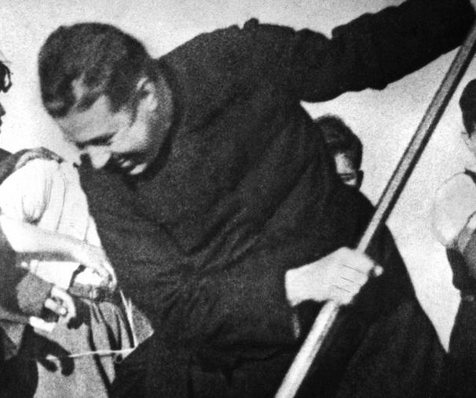
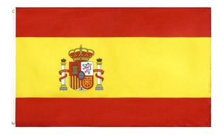

Chilean Saints
The father Hurtado
Luis Alberto Miguel Hurtado Cruchaga or better known as Father Hurtado, was born on January 22, 1901 in Viña del Mar.
He became a priest in 1933
ordained by the cardinal of belgium Ernest Van Roey. His stay in European countries was intensely used for the study of topics
that they would train him to achieve one of the goals he most desired: Being able to work with young people.
Despite his early death in 1952 he managed to do a lot of things which are:
_He was the founder of the magazine Mensaje.
_I care about the workers.
_He founded a home for the homeless called El Hogar de Cristo.
Father Alberto Hurtado founded on the message and action of Hogar de Cristo, to achieve a society that cares for the most excluded, that believes in the value of the community, and that gambles to transform everything that it dehumanizes us.
Father Hurtado is one of the most important people in the Chilean Catholic Church. The great faith that he had, his great personality and the passion he had for helping those most in need made him a figure of great influence.

Teresa de los Andes
Juana Enriqueta Josefina de los Sagrados Corazones Fernández Solar, known by the Catholic Church as Saint Teresa de Los Andes, was
a Chilean Catholic nun, belonging to Discalced Carmelites.
He was born on July 13, 1900 and died very early on April 12, 1920. Teresa de los Andes's family had a good economic situation and they were always Christian.
Juana received her school training at the school of the French nuns of the Sacred Heart. At the age of fourteen, inspired by God, she decided to consecrate herself to Him as a religious, specifically, as a Discalced Carmelite.
She was beatified by Saint John Paul II
in a Eucharistic celebration in Santiago's O'Higgins Park on April 3, 1987, during his pastoral visit to Chile. While on March 21, 1993, she was canonized in the Basilica of St. Peter's in the Vatican by the same pontiff.
One of the most famous miracles is that a firefighter suffered an electric shock and fell in the hospital without any hope of life, the firefighter's mother started a prayer chain in image to Teresa de los Andes and finally the firefighter managed to recover.

